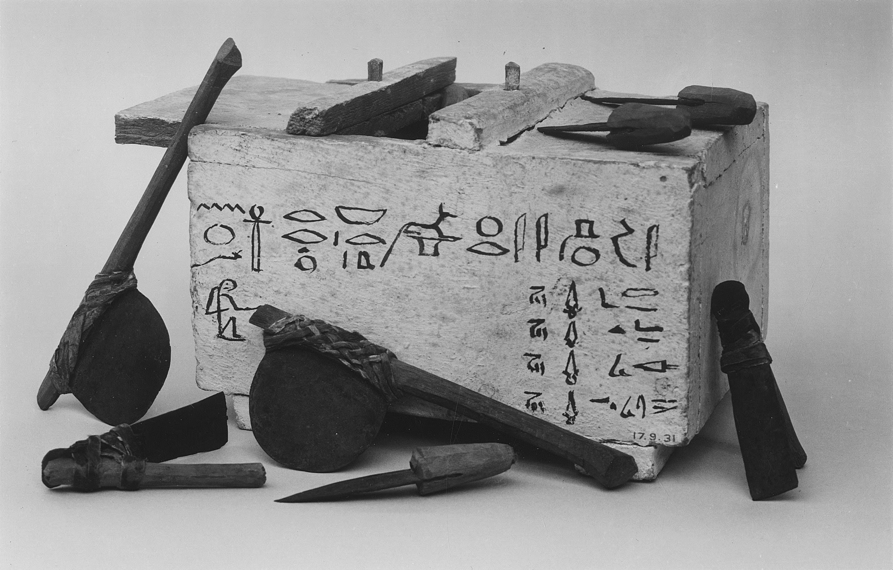

שֶׂרֶד śèred – scriber, scratch, awl
Semantic Fields:
Utensils
Author(s):
Konrad D. Jenner, Geert Jan Veldman
First published: 2025-03-07
Citation: Konrad D. Jenner, Geert Jan Veldman, שֶׂרֶד śèred – scriber, scratch, awl,
Semantics of Ancient Hebrew Database (sahd-online.com), 2025
(WORK IN PROGRESS)
Introduction
Grammatical type: n.m.
Occurrences: 1x HB (0/1/0); 0x Sir; 0x Qum; 0x Inscr. (Total: 1)
- Nebiim: Isa 44:13.
Ketiv/ Qere: none.
1. Root and Comparative Material
A.1 The etymology of the noun שֶׂרֶד is uncertain (CEDHL, 681). For an overview of previous proposals, see Ges18, 1299. Since the interchange between d and ṭ occurs more often (cf. GHAL, Part 1, 27; SLOCG, § 12.2), a connection with √שׂרט, ‘to make incisions’, שֶׂרֶט, ‘incision’, and its cognates (Ges18, 1299-300) might be considered.
A.2 Akkadian. A connection with sirdû, ‘pole of a chariot’ (CAD (S), 312) [not: ‘awl’ which is marṣāʾu in Assyrian → מַרְצֵעַ], is unlikely both because of its meaning and the contracted end-vowel. However, Old Assyrian sarādum, ‘to harness, load’, and masradum, ‘pack-saddle’ (Veenhof 1972: 9-11), might be related if perforated leather straps were used.
A.3 Ugaritic. A connection with srdnn, according to DULAT3, 759, ‘a type of projectile or missile’, seems unlikely, both because of the different sibilant and because of the entirely different context.
A.4 Syriac. If the connection with √śrṭ proposed above is tenable, comparison with Syriac ܣܪܛ (seraṭ), ‘to scratch, make a line or stroke ... to draw or write a line’, ܣܪܛܐ (serṭā), ‘scratch, gash, line, character’, ܡܣܪܛܐ (masrāṭā), ‘scalpel’ (Payne Smith, CSD, 286, 391; Brockelmann, LS, 498-99), is certainly enlightening.
A.4 Classical Arabic. Several authors have proposed a connection with sarada in the meaning of ‘to perforate’ (Lane, 1346-47), sarīd, sirrād, ‘awl’ (DAF, 1080). The correspondence between Heb. ś and Arab. s is problematic, but not decisive (cf. HAWAT, 470-71; Thomas 1971: 325; SLOCG, 123-25). See also Conclusions.
A.4 Modern Arabic. Syro-Palestinian Arabic masrad, ‘awl’ (DPASyr, 243).
A.5 Greek. In SFG, 57-58, the possibility is considered that σάρδιον, ‘the Sardian stone’ or ‘sard’, also attested in Rev 4:3, would be a Semitic loanword. König, HAWAT, 471, calls this difficult, without giving reasons. Lewy misunderstood the quotation from Pliny he gave. The sard was used as a stone for seals because it was relatively soft and therefore easy to engrave (Bolman 1938: 93-95). For this reason it is unlikely that it was used in a tool for engraving gems or in shaping a wooden image.
2. Formal Characteristics
A.1 The word שֶׂרֶד is a noun, male singular absolute state.
3. Syntagmatics
A.1 The word שֶׂרֶד occurs in Isa 44:13 in a singular absolute state.
A.2 שֶׂרֶד is preceded by the preposition בְּ, which בְּ introduces the instrument with which the action is performed; תאר pi., ‘to outline’ or ‘to draw’.
4. Ancient Versions
a. Septuagint (LXX) and other Greek versions:
b. Peshitta (Pesh):
- ܘܒܬܬܐ ܕܒܩܗ ܘܓܠܦܗ (wabtetā dabqēh wgalpēh), ‘and he engraves it’:5 Isa 44:13.
c. Targumim (Tg):
- משקולתא, ‘plummet’:6 Isa 44:13.
d. Vulgate (Vg):
- runcina, ‘plane’:7 Isa 44:13.
A.1 The Greek Version of Isaiah 44:13 raises a text-critical problem. It does not run in accordance with MT. In fact, mt and lxx present a different picture of the making of cult objects or idols. In its description of the activities of the carpenter mt contains four technical terms (→ קַו and שֶׂרֶד, → מַּקְצֻעָה and → מְּחוּגָה) in four cola. The lxx does not provide an exact correspondence of this. The main manuscripts inexplicably connect ἐκλεξάμενος, ‘having chosen’, with v. 12. Moreover, נָטָה קָו is rendered inaccurately by ἔστησεν αὐτὸ ἐν μέτρῳ, ‘he sets it up with a measure’. The next two cola are skipped and וּבַמְּחוּגָה יְתָאֳרֵהוּ is translated καὶ ἐν κόλλῃ ἐρρύθμισεν, ‘and he composed it with glue’. Possibly ἐν κόλλῃ is an early error for ἐν κυκλῳ, ‘with a circle’ (→ מְּחוּגָה). It seems therefore that the lxx does not help much in establishing the meaning of שֶׂרֶד. However, in v. 12 καὶ ἐν τερέτρῳ ἔτρησεν αὐτό, ‘and he bored it with an awl’, is lxx’s strange rendering of וּבַמַּקָּבֹות יִצְּרֵהוּ, ‘and with hammers he shapes it’. Because the translators of lxx knew the correct rendering of מַקֶּבֶת well (HIS, 87), it is possible that originally ‘and he bored it with an awl’ was the rendering of יְתָאֲרֵ֣הוּ בַשֶּׂ֔רֶד, but that somehow the difficult text of vv. 12-13 got into disorder.
A.2 αʹ renders καὶ ἐμόρφωσεν αὐτὸ ἐν παραγραφίδι, ‘he shapes it with a writing instrument’ (cf. LSJ, 1306). In the Syro-Hexapla this is interpreted as ܒܓܘ̈ܢܬܐ, ‘with a ruler’. In some manuscripts of αʹ these words are found for the words translated by lxx as ἔστησεν αὐτὸ ἐν μέτρῳ . Other manuscripts of αʹ add καὶ ἐμόρφωσεν αὐτὸ ἐν παραγραφίδι to lxx’s ἔστησεν αὐτὸ ἐν μέτρῳ .
A.3 Pesh has ܘܒܬܬܐ ܕܒܩܗ ܘܓܠܦܗ, ‘he fastens it with glue, and engraves it’, of which ܘܓܠܦܗ looks like the remnant of an earlier rendering. Perhaps this is to be connected to the Syro-Lucianic version of Isaiah, which contains a rendering of the two cola's missing in lxx and s, the whole verse reads as follows: ܘܐܩܝܡܗ ܒܡܫܘܚܬܐ ܘܒܕܝܒܝܛܐ ܪܫܡܗ ܘܒܦܪܙܠܐ ܓܠܦܗ ܘܒܬܬܐ ܕܒܩܗ (Ceriani 1868-71: 18) ‘and sets it up with a measure, marks it with a carpenter’s square, engraves it with an iron and fastens it with glue’. It shares the same wording in the two cola's which are present in Pesh. The disorder mentioned in the discussion of the Greek version may be visible even in Pesh: when placed alongside mt, it seems that Pesh has the second and the third part inverted. When ܘܓܠܦܗ is rendering יְתָאֲרֵהוּ, it may be supposed that even Pesh* had this inversion.
A.4 Tg apparently guessed, based on the parallelism in the Hebrew text, with קַו.
5. Lexical/Semantic Fields
A.1 The word is a hapax legomenon and is one of the four utensils mentioned which a carpenter used to shape a wooden image of a god (→ מְּחוּגָה; → מַּקְצֻעָה; שֶׂרֶר; → קַו). With the exception of קַו, ‘measuring line’, the precise meaning of these technical terms is difficult to establish.
6. Exegesis
6.1 Textual Evidence
A.1 The word שֶׂרֶר is explained in several degrees of certainty, for the following paragraph only primary choices are quoted. Some connect שֶׂרֶר to the direct context of Isa 44:13 without giving any further specification of the instument given: ‘ein Werkzeug des “Meisters i. Holz”’ (Ges18, 1299), or ‘Werkzeug des Bildschnitzers’ (HWAT, 762). Some are reluctant but are presenting a possible meaning: ‘Die richtige Bedeutung des Wortes bleibt offen’ (Gradwohl 1963, 85-86), HAL, 1262: ‘die Bedtg. des sbst. ist ungewiss’ ... ‘Ahle, Pfriem ... Reisstift ... wohl vorzuziehen’. Gesenius, TPC, 1337-38 has ‘stilus’, and is supported by BDB, 975: ‘from context, a marking-tool’ and HAWAT, 470-71; but also by: HCHAT, Bd. 2, 498: ‘Griffel, Stift, zum Zeichnen’); Zorell, 807: ‘instrumentum artificis ad opificium praedesignandum: frt. graphis, stilus’, DBHE, 714: ‘lápiz, estilo, punzón’, CEDHL, 681: ‘stylus, marking tool ... usually translated from the context’, Avitzur, 162: מין מרצע (‘a kind of awl’). ‘A carpenter's tool having a sharp point’, (viz. the Hebrew-Arabic dictionary by David ben Abraham mentioned in Blau 1995: 691; MHH, 1143: חרט לעיבור עץ בעשיית הפסילים (‘graving-tool to carve wood for making idols’). Delitzsch 1889 has ‘Reiß- oder Zeichenstift’, Elliger 1978 has as primary choice ‘Reißstift’). EncB vol. 3, 3646 seems to follow the same explanation but also presents the rendering of Haupt ‘“שׄרד compasses,”’ which Haupt connects with the Assyrian sirdû, ‘yoke’. Some explicitly refer to the Rabbinical rendering, which is to be discarded (cf. discussion below par. B.2) GB, 792: ‘wahrsch.: Stift, n. Kimchi: Rötel, Rotstift’, KBL, 930: ‘nach d. Zusammenhang Rötel, according to context red chalk (Fe2O3)’.
A.2 The various suggestions as how to render שֶׂרֶר are emulating from the textual context. In Isa 44:13, the shaping of a wooden image of a god is presented in several stages connected to the four utensils. The last two utensils (שֶׂרֶר and מְּחוּגָה) are gouverned by the imperfect יְְתָאֲרֵהוּ, ‘he traces it, outlines it’, this would suggest that the enumeration does not intend to describe successive stages in the carpenter’s work and that both tools were used in drawing lines. The instruments are used to mold the wood so that the end-result would be כְּתַבְנִית אִ֔ישׁ כְּתִפְאֶרֶת אָדָם, ‘in human form, with human beauty’, to be placed in a house or shrine (בָּֽיִת).
B.1 Alternative choices are found in: EncB vol. 3, 3646; Ellinger 1978; EncM, vol 8, 388-89; Gradwohl 1963; Ges18, 1299; HAL, 1262; HCHAT, Bd. 2, 498; HWAT, 762; Genesius, TPC 1337-38.
B.2 In the Middle Ages rabbinical interpretations of שֶׂרֶר crop up which explain the word as a red-dyed cord. As Blau 1995: 695 has demonstrated convincingly, this interpretation goes back to an erroneous understanding of the Arabic translation of Saadya Gaon by the famous Hebrew lexicographer Ibn Janaḥ who was reponsible for the theory that שֶׂרֶר would be a red-dyed cord or red marking tool. This theory was perpetuated up to modern times, but should definitely be discarded. As noted by Blau 1995: 691, the correct interpretation is found in the Hebrew-Arabic dictionary of David ben Abraham: ‘a carpenter's tool having a sharp point’.
6.2 Figurative Use
A.1 Not attested.
6.3 Pictorial Material
A.1 Whether or not one of the depicted carpenters in the tomb of Rekh-mi-Rē is using an awl is not sure, but one of the carpenters is depicted completing a statue (Davies 1943, Plate lv), which is a situation comparable to Isa 44:13.
6.4 Archaeology
A.1 One might refer to a Egyptian collection of bronze woodworking tools part of a carpenter’s kit (for an example of a kit with tools, see Figure 1). See Figure 2 for an example of bronze awls as found in many excavations in Egypt and the Levant (AEMT, 356).

Figure 1: Carpenter’s chest of Ankhef; Middle Kingdom (ca. 1981-1802 BCE).](https://artsandculture.google.com/asset/UQGClKZKU_wKEQ?childAssetId=sgE1QNm3XZXu9A)

Figure 2: Chisel or Awl From Foundation Deposit 2 of Hatshepsut's Valley Temple from the New Kingdom (ca. 1479-1458 BCE).](https://www.metmuseum.org/art/collection/search/550009)
7. Conclusion
A.1 In Isa 44:13, both the embracing parallelism between קַו and מְּחוּגָה, and the vertical verse-line parallelism between יְתָאֲרֵ֣הוּ, ‘he traces it, outlines it’, in vv. 13aB and 13bB suggest that שֶׂרֶר and מְּחוּגָה were measuring tools. The etymological cognates, especially the Syriac and Arabic ones, suggest a sharp-pointed tool used to incise a line in the wood, what we would call a ‘scriber’, or ‘scratch awl’. This is supported by Aquila’s rendering and by the medieval Hebrew-Arabic lexicographer David ben Abraham. Joshua Blau has demonstrated that other Jewish renderings from the Middle Ages, though repeated up till modern times, rested on an erroneous interpretation of the Arabic translation of Saadya Gaon. It is possible that the original rendering of the Old Greek was ‘awl’ but that the text got into disorder as a result of which the phrase landed in v. 12. Also s seems to reflect an earlier translation which involved an engraving tool.
A.2 The description of a Palestinian carpenter’s work in Avitzur, 166, renders it likely that שֶׂרֶר was more or less a synonym of → חֶרֶט. Thin-blade awls have been found in ancient Egypt (AEMT, 356).
A.3 The broader context of the polemic in Isa 44:9-20 does not aim at providing the student with either an exact knowledge of the making of cult objects or a complete survey of the tools of the craftsmen. Its distinctive purpose is the denunciation of idolatry and the proclamation that Yhwh’s power is indisputable against the vain boasting of the Mesopotamian deities and their physical representations. The description wants to bring home the message that making an idol is an utterly human, very clumsy process. It is not impossible that in choosing the term שֶׂרֶר the author wanted to make a contrasting pun on → זֶרֶת, ‘span’, the term he used in his magisterial description of God’s creation of the heavens (Isa 40:12).
Bibliography
For the abbreviations see the List of Abbreviations.
Daniel I. Block, The Book of Ezekiel: Chapters 1-24 (NICOT), Grand Rapids: Eerdmans, 305.
Joshua Blau, ‘A Misunderstood Medieval Translation of sered (Isaiah 44:13) and Its Impact on Modern Scholarship’, in: David P. Wright, et al. (eds.), Pomegranates and Golden Bells: Studies in Biblical, Jewish, and Near Eastern Ritual, Law, and Literature in Honor of Jacob Milgrom, Winona Lake: Eisenbrauns, 689-95.
Johan Bolman, De edelsteenen uit den Bijbel gezien in het licht der hedendaagsche Edelsteenkunde, Amsterdam: H.J. Paris.
Antonio M. Ceriani, ‘Esaiae fragmenta syriaca versionis anonymae et recensionis Jacobi Edesseni’, in: textitMonumenta sacra et profana tom. 5: Milan, Bibliothecae Ambrosianae / Libraria Polianaea Hermenegildi Besozzi.
Norman de Garis Davies, The tomb of Rekh-mi-Rē at Thebes: Volume II (Publications of the Metropolitan Museum of Art Egyptian Expedition, v. 11), New York: Metropolitan Museum of Art.
Franz Delitzsch, Commentar über das Buch Jesaia (BCAT, 3/1), Leipzig: Dörffling & Franke.
Karl Elliger, Deuterojesaja, 1.Teilband: Jesaja 40,1-45,7 (BK 11/1), Neukirchener Verlag: Neukirchen-Vluyn, 427.
Roland Gradwohl, Die Farben im Alten Testament (BZAW, 83), Berlin: Topelmann, 85-86.
D. Winton Thomas, ‘Isaiah XLIV.9-20: A Translation and Commentary’, Winton Thomas, in: André Caquot et Marc Philonenko (eds.), Hommages á M. André Dupont-Sommer, Paris: Adrien-Maisonneuve, 319-30.
Klaas R. Veenhof, Aspects of Old Assyrian Trade and its Terminology, Leiden: Brill.